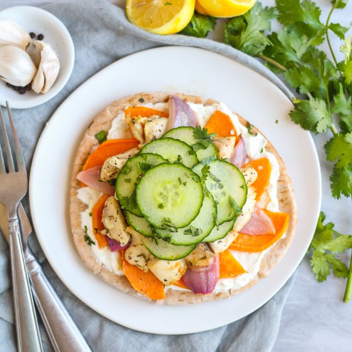

Sheet Pan Roasted Chicken & Veggie Pitas with Lemony Yogurt

Total Time
35 min
Nutrition (per serving)
688.7 kcalCalories
60.5 gProtein
72.4 gCarbs
18.5 gFat
Full nutrition table
| Calories | 688.7 kcal |
| Total fat | 18.5 g |
| Saturated fat | 3.9 g |
| Trans fat | 0.1 g |
| Cholesterol | 216.3 mg |
| Sodium | 597.9 mg |
| Carbohydrates | 72.4 g |
| Fiber | 10.4 g |
| Sugars | 13.4 g |
| Protein | 60.5 g |
| Potassium | 1421.8 mg |
| Calcium | 169.2 mg |
| Iron | 5.6 mg |
| Vitamin A | 16230.7 IU |
| Vitamin C | 22.6 mg |
| Vitamin D | 2.3 IU |
Cookware
Ingredients
- 2 lbchicken thighs, boneless skinless
- 1 small bunchcilantro
- 1English cucumber
- 4 clovesgarlic
- 2lemons
- 1 cupplain Greek yogurt
- 1 mediumred onion
- 1 lbsweet potato
- 4whole grain pitas
- black pepper
- extra virgin olive oil
- honey
- salt
- thyme, dried
Steps
- Preheat oven to 425°F.
- Wash and dry the fresh produce.2 lemons
1 lb sweet potato
1 English cucumber
1 small bunch cilantro - Zest lemons into a small bowl, add yogurt, and whisk to combine. Set aside.1 cup plain Greek yogurt
- Peel and mince garlic; place in a large bowl.4 cloves garlic
- Juice lemons into the bowl with the garlic. Add oil, honey, and spices; whisk to combine.2 tbsp extra virgin olive oil
2 tsp honey
1 tsp thyme
1 tsp salt
1 tsp black pepper - Cut the chicken into small bite-sized pieces and add to the bowl.2 lb chicken thighs, boneless skinless
- Peel, halve, and thinly slice the sweet potatoes into half rounds; add to the bowl.
- Peel, trim, and cut the onion into thick wedges; add to the bowl and toss to coat.1 medium red onion
- Transfer chicken and veggies to a large baking sheet pan and arrange in a single layer. Place in the oven and bake, tossing once, until the chicken is cooked through and veggies are fork-tender, 20-25 minutes.
- Meanwhile, trim and thinly slice the cucumber; place in a medium bowl along with the salt and pepper.¼ tsp salt
⅛ tsp black pepper - Shave the cilantro leaves off the stems; discard the stems and mince the leaves. Add half to the bowl with the cucumber and toss to combine; reserve the other half for garnish.
- Toast pitas if desired.4 whole grain pitas
- To serve, divide pitas between plates and spread with lemon yogurt. Top with chicken, veggies, cucumbers, and remaining cilantro. Enjoy!